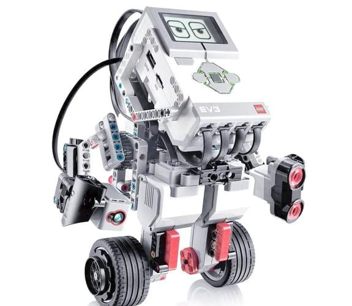

LEGO Mindstorms Robot Inventor

乐高 MINDSTORMS 系列收官之作，智能集线器搭配角度电机与传感器，支持 Scratch 积木与 Python 编程，可搭建从人形到机械臂的多种形态，是积木与代码结合的集大成者。
客观评测
MINDSTORMS Robot Inventor（51515）以智能集线器为核心，内置 32 位微控制器（STM32F4 系）与六轴陀螺仪，提供 6 个自动识别的输入/输出端口，通过蓝牙 5.0 与平板/电脑连接。套装含多个角度电机与颜色、距离传感器，约 900+ 颗粒，可搭建 5 种以上官方模型。编程提供 Word Blocks 积木与 Python，兼顾图形化入门与代码进阶。
主观点评
这是乐高把“编程教育”打磨得最完整的一套：先搭出一个会动的怪兽，再让它按自己的逻辑行动，创造感层层递进。积木质量依旧是乐高水平，集线器的端口识别让课堂管理轻松不少，Python 支持也让大孩子有继续深挖的空间。遗憾是价格不便宜，且玩法深度绑官方 App。若预算允许，它仍是家庭与机构采购的稳妥之选。
优点与不足
- 积木搭建 + Scratch/Python 双轨编程，学习路径完整
- 智能集线器端口自动识别，接线与调试省心
- 官方模型从人形到工程车，玩法覆盖广
- 价格较高，作为教育产品门槛不低
- 官方 App 依赖度高，脱离生态后开发体验下降
参数规格
| 自由度 | 视搭建形态而定（套装可搭 5 种以上官方模型） |
|---|---|
| 智能集线器 | 集成 32 位微控制器（ST STM32F4 系，约 100MHz+） |
| 端口 | 6 个输入/输出端口（自动识别电机与传感器） |
| 传感器 | 颜色传感器、距离传感器、六轴陀螺仪（集线器内置）等 |
| 电机 | 套装含多个角度电机（可精确控制角度与速度） |
| 电池 | 智能集线器内置可充电锂电池 |
| 续航 | 约 1-2 小时（视负载） |
| 控制方式 | 蓝牙连接平板/电脑，App 遥控与编程 |
| 编程 | Word Blocks（Scratch 3 风格积木）与 Python |
| 通信 | 蓝牙 5.0、USB |
| 兼容性 | 兼容乐高 Technic 与 System 积木 |
| 套装规模 | 约 900+ 颗粒（51515） |